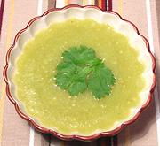

|
Tomatillo Sauce, CookedMexico - Salsa Verde | ||||
| Makes: Effort: Sched: DoAhead: |
- ** 45 min Yes |
In Mexico cooked tomatillo sauce is served mainly with meats and as a recipe ingredient rather than as a condiment or dip, though I confess I've used it quite successfully slightly warm as a dip for fried tortilla chips. | |||
|
|
1-1/2 4 1 2 1-1/2 1/2 2 |
# oz cl T t T |
Tomatillos (1) Onion white Garlic Chili Serrano (2) Oil Salt Water |
Some recipes call for you to char the skins of the chilis and tomatillos and rub them off, but I've found this unnecessary if you have a good food processor with a sharp metal blade. On the other hand, it is very easy to do if you have a good propane torch.
|